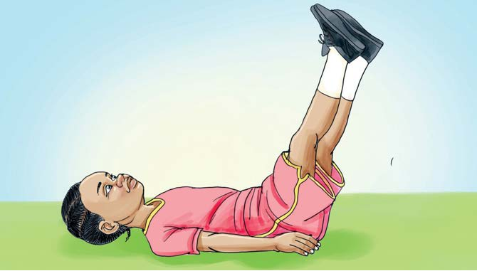

Tujinyooshe miili yetu
Jinsi ya kujinyoosha kwa kulala na kunyanyua miguu kwa pamoja
- Kaa chini.
- Lala kwa mgongo.
- Nyoosha mikono ikiwa chini.
- Nyanyua miguu kwa pamoja.
- Rudisha miguu chini na nyanyua tena.
- Rudia mara tano.

Tujinyooshe miili yetu
